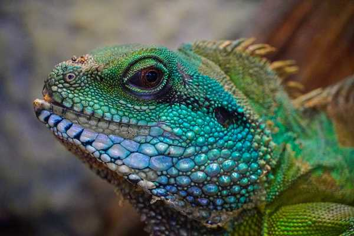

¿Qué reptiles puedo adoptar?
Hay muchos tipos diferentes de reptiles que se pueden tener como mascotas, cada uno con sus propias características y necesidades. Algunos de los reptiles más comunes que se mantienen como mascotas son:
Tortugas
Son animales tranquilos que pueden vivir durante muchos años. Las tortugas necesitan un hábitat adecuado con un ambiente húmedo y cálido, y una dieta que incluya alimentos frescos y variados.
Lagartijas
Son pequeños reptiles que son fáciles de cuidar. Necesitan un hábitat que incluya suficiente espacio para moverse, una fuente de calor adecuada y una dieta de insectos frescos.
Serpientes
Son animales fascinantes pero requieren un cuidado especializado. Necesitan un hábitat adecuado que incluya una fuente de calor y un refugio, y una dieta que consista en alimentos frescos y congelados.
Dragones barbudos
Son una especie de lagarto que es popular como mascota debido a su naturaleza tranquila y su personalidad amigable. Necesitan un hábitat adecuado con una fuente de calor y una dieta que incluya insectos frescos y verduras.
¡Dato de vital importancia!
Tener presente que la sola tenencia de algunos de los reptiles informados es ilegal en muchos países. Se recomienda fuertemente averiguar qué reptil puedes tener en tu país o región sin consecuencias legales.

Criar un reptil es una responsabilidad seria y requiere un cuidado adecuado para garantizar que el animal tenga una vida saludable y feliz. Aquí hay algunas etapas básicas que debes seguir al criar un reptil:
Elija el reptil adecuado
Antes de decidir criar un reptil, investiga y elige un animal que sea adecuado para tu estilo de vida. Considera el tamaño, el comportamiento y las necesidades de hábitat del reptil, así como tu propia capacidad para proporcionar cuidados adecuados.
Prepara un hábitat adecuado
Cada reptil tiene necesidades específicas de hábitat. Asegúrate de tener un terrario o recinto que sea lo suficientemente grande para tu reptil y que proporcione las condiciones ambientales adecuadas (temperatura, humedad, iluminación, sustrato, decoración, etc.).
Alimenta a tu reptil correctamente
Alimenta a tu reptil con una dieta adecuada para su especie. Algunos reptiles son carnívoros, mientras que otros son herbívoros u omnívoros. Además, observa la cantidad y frecuencia de alimentación recomendadas.
Mantén una higiene adecuada
La limpieza del hábitat es importante para mantener a tu reptil saludable y prevenir enfermedades. Limpia el hábitat regularmente y retira heces, restos de comida y otros desechos.
Esté atento a la salud de tu reptil
Observa a tu reptil diariamente para detectar señales de enfermedad o lesiones. Si notas algo inusual, llévalo al veterinario especializado en animales exóticos.
Recuerda que criar un reptil no es para todos y requiere tiempo, dedicación y recursos financieros adecuados. Si estás dispuesto a asumir la responsabilidad, la recompensa puede ser una amistad duradera con un animal increíble.